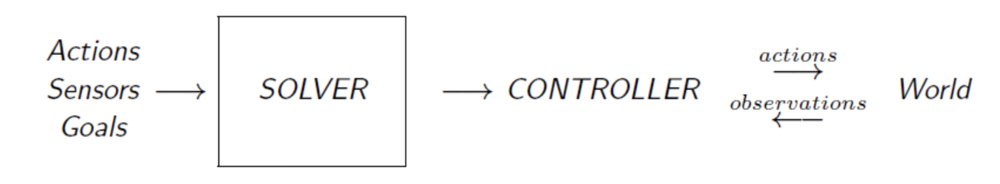

2 Planning¶
Problem Solving¶
Autonomous Behaviour in AI¶
- Programming-based
- Learning-Based
- Model-Based
- Approaches not orthogonal
- Different models yield different types of controllers 执行动作的策略模块
3-level Solver Ambitions¶
- Ambition: Write one program to solve all classical search problems
- Ambition 1.0 (Problem Solving) Write one program to solve a problem
- Ambition 2.0 (Problem Generation) Write one program to solve a large class of problems
- Ambition 3.0 (Meta Problem Solving) Write one program to solve a large class of problems effectively
Solving Approaches¶
Programming-Based Approach¶
- Pro: Domain-knowledge easy to express
- Con: Less Flexible (Can’t deal with situations not anticipated by programmer)
Learning-Based Approach¶
- Unsupervised/Reinforced Learning: Use reward & penalise
- Supervised: Use labelled data
- Evolutionary: Use original controllers to mutate and recombine to build better controller
- Pros Dose not require much knowledge in principle
- Cons Slower; Hard to know which features to learn
Model-Based Approach (Planning)¶
- One model for one specific problem 
- Pros Powerful; Quick; Flexible; Clear; Intelligent; Domain-independent
- Cons Need a model (sometimes very hard); Efficiency loss
- Always need trade-off between “Automatic and general” vs. “Manual work but effective”
Planning Models¶
Classical Planning Model¶
- Classical Planning Model = Basic State Model
-
Assumptions
- Deterministic
- Fully Observable
- Static World
- Discrete Time & Finite Actions
- Uniform Cost
-
Components
\[ M = \langle S, A, T, I, G \rangle \]- \(S\) - State spaces
- \(A(s)\) - Actions applicable for \(s \in S\)
- \(T\) - Deterministic Transition Function: \(s’ = T(A(s), s)\) shows one successor \(s’\) of \(s\)
- \(I\) - Initial state
- \(G\) - Goal states
- Uniform action costs \(c(A(s), s) = 1\)
-
Outcomes
- A seq of actions map \(s_0\) into \(g\)
- Optimal if total cost to goal is minimum
Conformant Planning Model¶
- \(\approx\) Brute Force
- Components (Diff with classic)
- Initial State → A set of possible initial states
- Deterministic Transition Function → Non-deterministic
- Outcomes
- No Observation - No new info; must pre-planning
- Goal Guarantee
- Rarely optimal
- Must map any possible \(s_0\) to \(g\), too much unnecessary work
- Sensitive to Worst/Special case
Markov Decision Processes (MDPs)¶
-
Assumption
-
Markov Property: the next state only depends on the current state and actions.
\[ P(s_{t+1} \mid s_t,a_t,s_{t-1},a_{t-1},\ldots) = P(s_{t+1} \mid s_t,a_t) \] -
Fully Observable
- Discrete Time & Finite Actions
- Fixed Transition Probabilities
-
-
Components (Diff with conformant) $$ M = \langle S,A,T,R,\gamma \rangle $$
- Introduce the Transition Probability Function: $$ T(s, a, s') = P(s' \mid s, a) $$
- Introduce Reward Function \(R\) and Discount Factor \(\gamma\):
- For estimating the value of each state
-
Outcomes
- Map states to actions
- Optimal if total expected cost to goal is \(minimum\)
Partially Observable MDPs (POMDPs)¶
-
Assumption
- Markov Property
- Limited Observable
-
Components (Diff with MDPs)
-
Introduce Sensor Model (based on Probability Distribution)
\[ \mathrm{b}(s_t) = P(s_t \mid \text{historical actions and observations}) \] -
Initial/Goal States → Belief States \(\mathrm{b}(s_0)\) and \(\mathrm{b}(g)\)
-
-
Outcomes
- Map belief states into actions
- Optimal if total expected cost from \(\mathrm{b}(s_0)\) to \(\mathrm{b}(g)\) is minimum